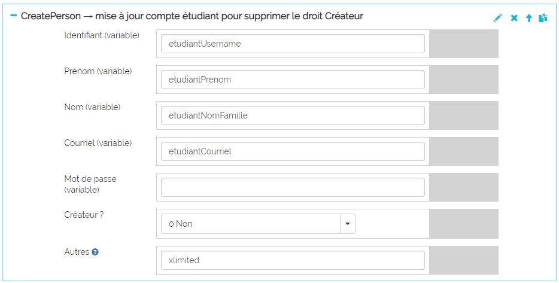
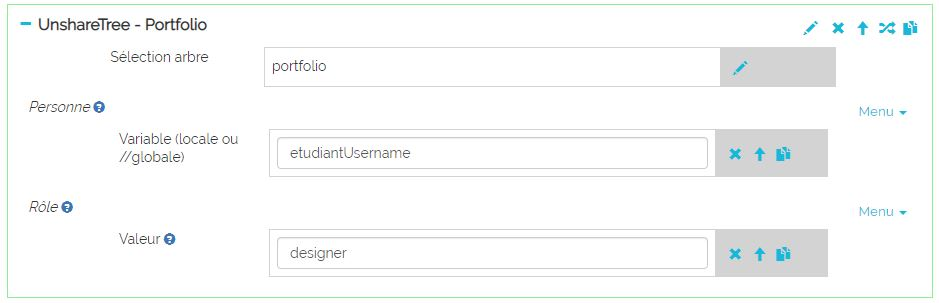
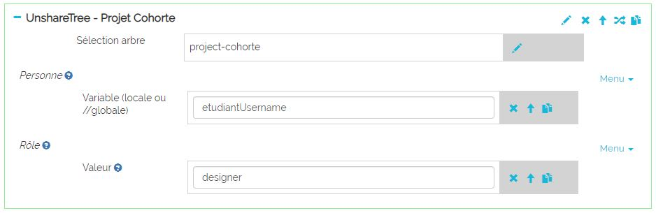

Il est possible d'automatiser la création d'un portfolio lors de la première connexion d'un
utilisateur. Dans ce cas Karuta exécutera un batch créé puis spécifié par le designer dans le fichier
application/js/specific.js.

Condition d'exécution
Pour que le batch de création s'exécute lors de la première connexion de l'utilisateur, ce
dernier doit avoir le droit Créateur qui lui sera retiré à la fin de l'exécution du batch.
Il doit également avoir l'instruction xlimited dans le champ Autre.
REMARQUE : si CAS est utilisé, Karuta créera automatiquement l'utilisateur avec l'identifiant CAS
comme identifiant Karuta ainsi qu'avec le droit Créateur et l'instruction xlimited
dans le champ Autre.
Étape 1 - Configuration du backend
Dans le fichier de configuration configKaruta.properties du backend il faut renseigner
les valeurs suivantes :
- casCreateAccount=y
- createAsDesigner=y
Étape 2 - Écriture du batch de création
Le batch doit inclure les instructions pour créer le ou les portfolios de l'utilisateur puis
partager ces portfolios avec cet utilisateur dans le rôle désiré. À la fin il doit aussi :
- retirer le droit Créateur de l'utilisateur ;
- départager les portfolios créés du l'utilisateur dans le rôle designer ;
- changer le propriétaire des portfolios créés pour root.
Exemple de batch de création automatique :

Téléchargez ce modèle de batch ici
ou encore voyez le détail du modèle de batch plus bas.
Étape 3 — Configuration de l'application (frontend)
Le designer doit spécifier dans le fichier application/js/specific.js le batch de création
ainsi que les variables utilisées dans ce batch . De plus, la valeur de la variable g_execbatch
à la ligne 3 doit être mise à true.

Détails du batch de création de l'étape 2
Création du projet pour la cohorte
Dans notre exemple un projet pour la cohorte sera créé si il n'existe pas déjà (si il s'agit du
premier étudiant de cette cohorte à se connecter). Le code et libellé du projet sont composés de
l'année + mois du système (donc une nouvelle cohorte à tous les mois) tel que spécifié par la
variable globale définie dans le fichier specific.js.

Création du portfolio de l'utilisateur

Partage du portfolio avec l'utilisateur dans le bon rôle

Mise à jour des ressources profil dans le portfolio
Dans notre modèle de portfolio, nous voulons pré-remplir le nom et le couriel de l'étudiant.

Mise à jour du compte utilisateur pour retirer le droit Créateur
On utilise l'élément create-person pour mettre à jour un compte existant.

Départage du portfolio d'avec l'étudiant dans le rôle designer
Le création automatique du portfolio à partir du compte de l'étudiant en avait fait le designer.
Or l'étudiant ne doit pas avoir plus d'un rôle dans son portfolio.

Départage du projet cohorte d'avec l'étudiant dans le rôle designer

Changement de propiétaire du portfolio pour root
Idem point précédent : la création du portfolio par l'étudiant en avait fait le propriétaire.

Changement de propiétaire du projet cohorte pour root